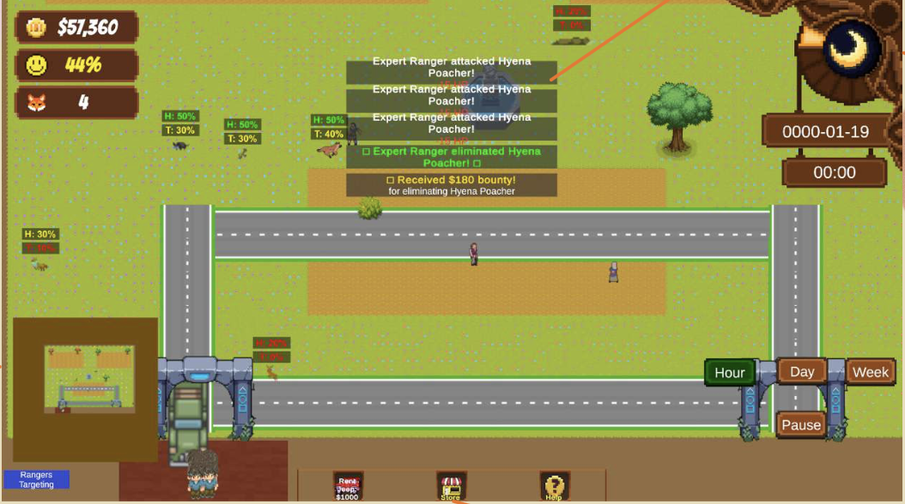
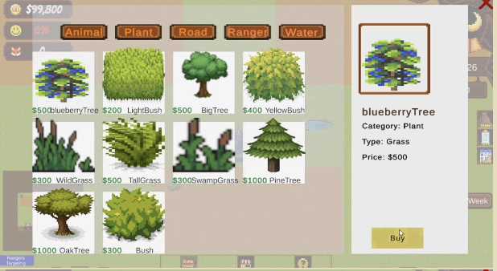

Safari — A Dynamic Ecosystem Management Simulation
Build a park.
Balance a world.
A 2D management simulation where animal welfare, tourism, infrastructure, and economics constantly influence one another.

01 / The product problem
Complex systems
should feel playable.
The challenge was to help players understand ecological and economic trade-offs without overwhelming them with the systems underneath.
02 / A living game loop
Every decision
changes the park.
Safari treats management as a cycle rather than a checklist: growth creates opportunity, cost, and a new need for careful planning.
visitors
revenue
animals
the park
More visitors → more revenue → more infrastructure → more habitats → higher operating cost → better management.
03 / Product thinking into UX
Reduce the
decisions that don't matter.
I studied how familiar games make complex systems legible, then converted those observations into interaction decisions for Safari.
Hotbar / inventory interaction, day-night cycle, and an approachable visual language.
Management systems need quick, spatially stable actions.
Centralized tools for roads, habitats, and purchasing.


One central Store hubConsolidated fragmented markets to reduce navigation layers and speed up purchasing decisions.
Split-panel informationPlayers select animals or plants on the left, then inspect health, hunger, rarity, and actions on the right.

04 / A spatial management experience
A park is a
route, not a screen.
The entrance and exit sit on the same side, encouraging visitors through a continuous park route while keeping the world readable at every scale.
05 / Under the surface
Simple to play.
Organised underneath.
The game looks accessible because its simulation, world state, and feedback loops are connected deliberately.
systemEconomy
systemTourists
/ AI
06 / Product decisions
Design choices
that change play.
Too many separate markets
Centralized StoreLarge map
Minimap + camera navigationComplex construction
Tile-based placementNight becomes unreadable
Lighting becomes gameplayMultiple competing goals
Economic + ecological systems07 / Contribution
members
My roleProduct manager
Technical lead
Agile / Scrum sprints · backlog grooming · UML · feature planning
Tilemap architecture · A* pathfinding · economic systems · game state
GitLab version control · team coordination · core gameplay systems
The final project combined ecological simulation, resource management, spatial planning, and emergent behaviour into a playable management experience.
08 / Reflection
Systems
shape experience.
A good interface cannot compensate for poorly connected underlying systems. The centralized Store and minimap reduced unnecessary cognitive load; they were product decisions, not decoration.
Building Safari shifted my attention from simply how systems work to why people interact with them. I wanted Safari to make that system feel intuitive.